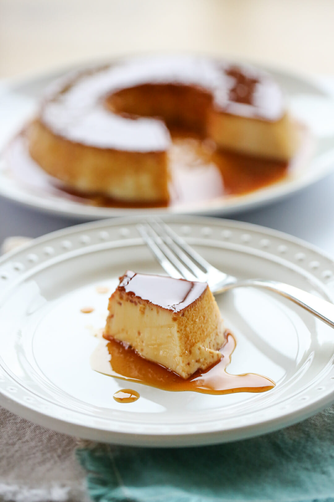

Home
Pudim de Leite

Description
Brazilian Pudim, short for Pudim de Leite Condensado, is best compared to a classic flan recipe. It is easy to make, with only four main ingredients. Sweetened condensed milk is a staple ingredient in most Brazilian desserts.
Ingredients
- Sweetened condensed milk
- Whole milk
- Eggs
- Vanilla
Steps
- Caramelize sugar in a pan. Just let it simmer until it turns a golden caramel color.
- Pour the boiling sugar into your tube pan (that should have a removable bottom) and swirl the pan around so the caramel coats the bottom and goes about an inch up the sides.
- To make the batter pour equal parts sweetened condensed milk and whole milk along with eggs and vanilla in a blender and blend.
- Pour the batter in your pan over the caramel mixture.
- Cover your pan with foil and place it in a water bath in the oven.
- After baking let it chill for at least 8 hours before serving.